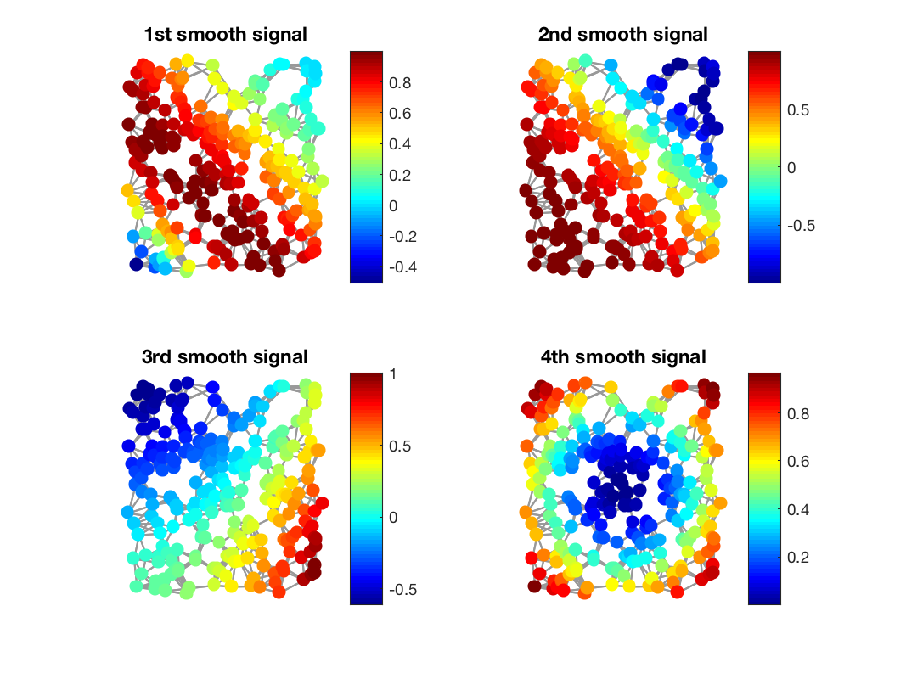
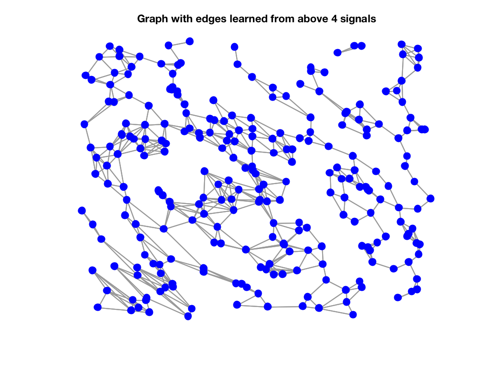

[W, stat] = gsp_learn_graph_log_degrees(Z, a, b) [W, stat] = gsp_learn_graph_log_degrees(Z, a, b, params)
'W = gsp_learn_graph_log_degrees(Z, a, b, params)' computes a weighted adjacency matrix \(W\) from squared pairwise distances in \(Z\), using the smoothness assumption that \(\text{trace}(X^TLX)\) is small, where \(X\) is the data (columns) changing smoothly from node to node on the graph and \(L = D-W\) is the combinatorial graph Laplacian. See the paper of the references for the theory behind the algorithm.
Alternatively, Z can contain other types of distances and use the smoothness assumption that
is small.
The minimization problem solved is
subject to \(W\) being a valid weighted adjacency matrix (non-negative, symmetric, with zero diagonal).
The algorithm used is forward-backward-forward (FBF) based primal dual optimization (see references).
Example:
G = gsp_sensor(256);
f1 = @(x,y) sin((2-x-y).^2);
f2 = @(x,y) cos((x+y).^2);
f3 = @(x,y) (x-.5).^2 + (y-.5).^3 + x - y;
f4 = @(x,y) sin(3*((x-.5).^2+(y-.5).^2));
X = [f1(G.coords(:,1), G.coords(:,2)), f2(G.coords(:,1), G.coords(:,2)), f3(G.coords(:,1), G.coords(:,2)), f4(G.coords(:,1), G.coords(:,2))];
figure; subplot(2,2,1); gsp_plot_signal(G, X(:,1)); title('1st smooth signal');
subplot(2,2,2); gsp_plot_signal(G, X(:,2)); title('2nd smooth signal');
subplot(2,2,3); gsp_plot_signal(G, X(:,3)); title('3rd smooth signal');
subplot(2,2,4); gsp_plot_signal(G, X(:,4)); title('4th smooth signal');
Z = gsp_distanz(X').^2;
% we can multiply the pairwise distances with a number to control sparsity
[W] = gsp_learn_graph_log_degrees(Z*25, 1, 1);
% clean up zeros
W(W<1e-5) = 0;
G2 = gsp_update_weights(G, W);
figure; gsp_plot_graph(G2); title('Graph with edges learned from above 4 signals');
This code produces the following output:
# iters: 663. Rel primal: 9.9921e-06 Rel dual: 6.3593e-06 OBJ 9.532e+01 Time needed is 0.555383 seconds 
If fix_zeros is set, an edge_mask is needed. Only the edges corresponding to the non-zero values in edge_mask will be learnt. This has two applications: (1) for large scale applications it is cheaper to learn a subset of edges. (2) for some applications we don't want some connections to be allowed, for example for locality on images.
The cost of each iteration is linear to the number of edges to be learned, or the square of the number of nodes (numel(Z)) if fix_zeros is not set.
The function is using the UNLocBoX functions sum_squareform and squareform_sp. The stopping criterion is whether both relative primal and dual distance between two iterations are below a given tolerance.
To set the step size use the following rule of thumb: Set it so that relative change of primal and dual converge with similar rates (use verbosity > 1).
V. Kalofolias. How to learn a graph from smooth signals. Technical report, AISTATS 2016: proceedings at Journal of Machine Learning Research (JMLR)., 2016.
N. Komodakis and J.-C. Pesquet. Playing with duality: An overview of recent primal? dual approaches for solving large-scale optimization problems. Signal Processing Magazine, IEEE, 32(6):31--54, 2015.